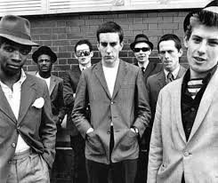
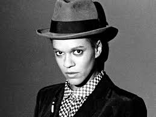
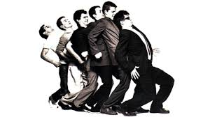

The Artists
The Specials:Formed in Coventry in 1977 by Jerry Dammers, Terry Hall(vocals), Lynval Golding(guitar,vocals),Neville Staples(vocal,percussion), Roddy Radiation(guitar),Horace Gentleman(bass) and John Bradbury(drums). Popular songs include: "Ghost town"(uk number 1 )," a message to you rudy", "too much too young".

The Selecter:
Signed by 2-Tone records in the late seventies fronted by iconic lead singer Pauline Black were on of the few racially and sexually intergrated bands of the time. The band entered the uk singles chart with hits such as "Three Minute Hero", "On My Radio" and "Missing Words".

Madness:
A north London band embracing the sound of first wave Ska founder Prince Buster. Madness pushed Ska right into the mainstream of british music. They coverd Prince Buster's "one step beyond" and also "Madness" a song which they named themselves after. Other notables tracks include "night boat to cairo" and "baggy trousers"